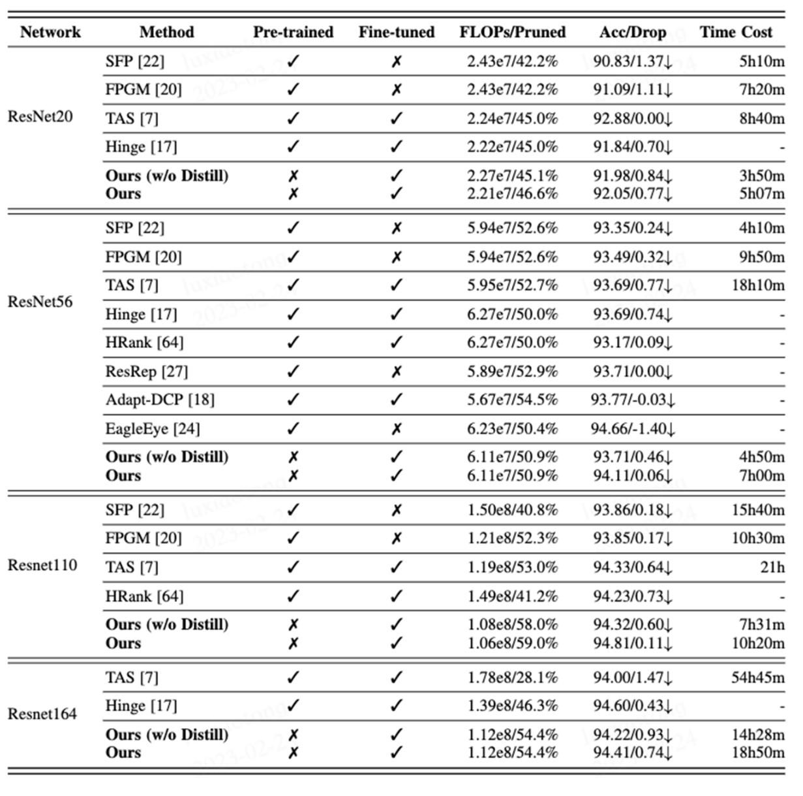
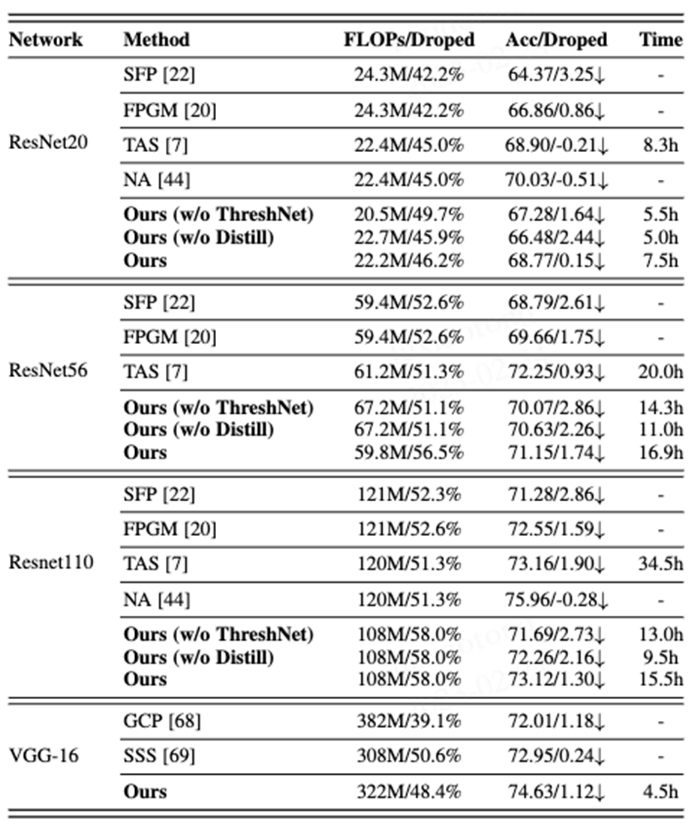
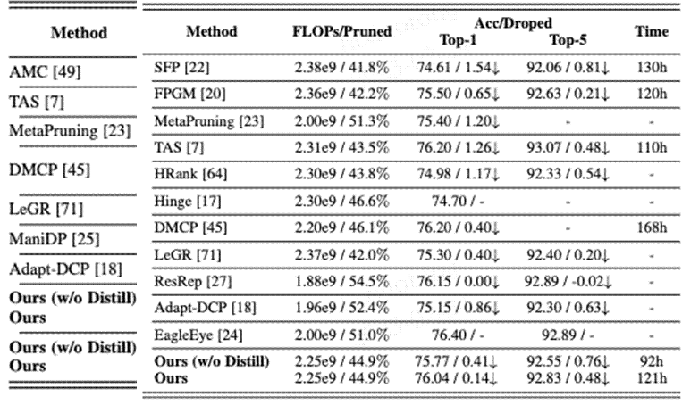

Abstract
Both network pruning and neural architecture search (NAS) can be interpreted as techniques to automate the design and optimization of artificial neural networks. In this paper, we challenge the conventional wisdom of training before pruning by proposing a joint search-and-training approach to learn a compact network directly from scratch. Using pruning as a search strategy, we advocate three new insights for network engineering: 1) to formulate adaptive search as a cold start strategy to find a compact subnetwork on the coarse scale; and 2) to automatically learn the threshold for network pruning; 3) to offer flexibility to choose between efficiency and robustness. More specifically, we propose an adaptive search algorithm in the cold start by exploiting the randomness and flexibility of filter pruning. The weights associated with the network filters will be updated by ThreshNet, a flexible coarse-to-fine pruning method inspired by reinforcement learning. In addition, we introduce a robust pruning strategy leveraging the technique of knowledge distillation through a teacher-student network. Extensive experiments on ResNet and VGGNet have shown that our proposed method can achieve a better balance in terms of efficiency and accuracy and notable advantages over current state-of-the-art pruning methods in several popular datasets, including CIFAR10, CIFAR100, and ImageNet.
Paper & Code & Demo
Experimental Results
Table 1. Comparison of different pruning algorithms for ResNet on CIFAR10. ’FLOPS / pruned’ means the calculation and pruning rate. ’Acc / drop’ means accuracy and performance drop. The “3” and “7” under ”Pre-trained” and ”Fine-tuned” indicate whether the corresponding method needs to be pretrained before pruning or optimized afterward, respectively. Note that the data of SFP and FPGM are from the training log published by the authors, and the data of TAS are from the open source code of the author.
Table 2. Comparison of different pruning algorithms for ResNet on CIFAR-100. The parameters in the above table are consistent with Table2, where “Ours (w/o ThreshNet)” means pruning with a fixed pruning rate for each layer in the network.
Table 3. Comparison of different pruning algorithms of ResNet50 & MobileNet V2 on ImageNet.
Citation
@article{lu2023adaptive,
title={Adaptive Search-and-Training for Robust and Efficient Network Pruning},
author={Lu, Xiaotong and Dong, Weisheng and Li, Xin and Wu, Jinjian and Li, Leida and Shi, Guangming},
journal={IEEE Transactions on Pattern Analysis and Machine Intelligence},
year={2023},
publisher={IEEE}
}
Concat
Xiaotong Lu, Email: xiaotonglu47@gmail.com
Weisheng Dong, Email: wsdong@mail.xidian.edu.cn
Xin Li, Email: xin.li@mail.wvu.edu
Leida Li, Email: ldli@xidian.edu.cn
Jinjian Wu, Email: jinjian.wu@mail.xidian.edu.cn
Guangming Shi, Email: gmshi@xidian.edu.cn
Comment